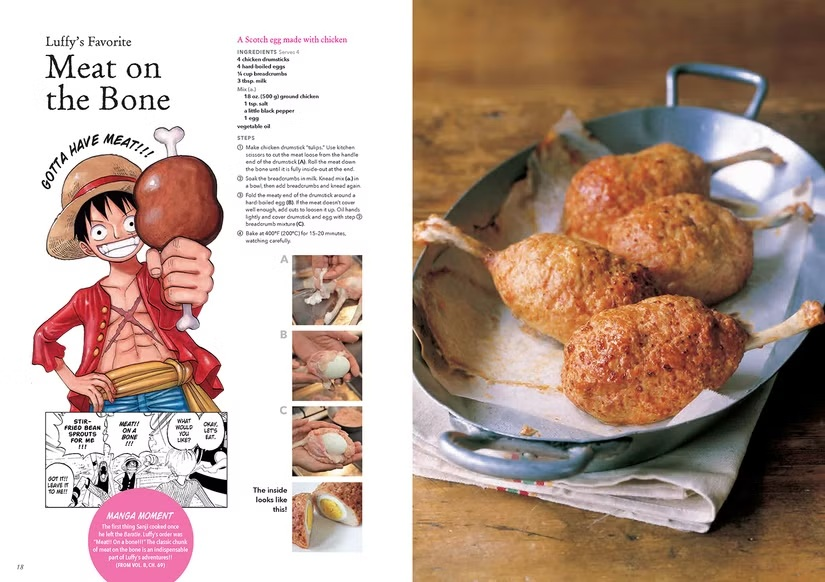

My Favorite Recipe
MEAT ON BONE

Ingredients
- 4 chicken drumsticks
- 4 hard-boiled eggs
- 1/4 cup breadcrumbs
- 3 tbsp. milk
Mix (a.)
- 18 oz. (500 g) ground chicken
- 1 tsp. salt
- a little black pepper
- 1 egg
- vegetable oil
Instructions
-
Make chicken drumstick “tulips.” Use kitchen scissors to cut the meat loose from the handle end of the drumstick (A).
Roll the meat down the bone until it is fully inside-out at the end.
-
Soak the breadcrumbs in milk. Knead mix (a.) in a bowl, then add breadcrumbs and knead again.
-
Fold the meaty end of the drumstick around a hard-boiled egg (B).
If the meat doesn't cover well enough, add cuts to loosen it up.
Oil hands lightly and cover drumstick and egg with step ② breadcrumb mixture (C).
- Bake at 400°F (200°C) for 15-20 minutes, watching carefully.